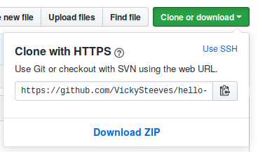

Introduction to Git & GitHub
Vicky Steeves

Before we can work on our partner's repo, we need to set up git
Let's get on the command line and start!
- On Windows, in the start menu search, type Git Bash
- On Mac OSX, search terminal from spotlight search
Setting Up Git
When the terminal is open, type the following as separate commands:
git config --global user.name "Vicky Steeves"
git config --global user.email "vicky.steeves@nyu.edu"
git config --global color.ui "auto"
git config --global core.editor "gedit"
git config --list # lists your configurations
Where it says core.editor, put in your favourite plain text editor. This could be simply Notepad (Windows) or TextWrangler (Mac), but NOT Word.
Getting the central repository:
Git calls copying a remote repository to your local computer cloning. Person B: clone person A's repository:
cd Desktop # or wherever you want to put the repository
git clone LINK
cd repository-name # go into your new repository
To get the link, click the big green button in the repository on GitHub & make sure you select it with HTTPS:
Let's change a file locally!
- Open the README with a text editor (not Word!).
- Add some new text to the README, or delete some text!
- Go back to the command line.
Type the following as separate commands:
git add README.md
git status
We are telling git that we want to track any changes we make to our REAMDE -- so we use git add. This adds the README file to the staging area (where git checks for file changes).
Adding our README
You should see something that looks like this:

The filename README.md should be green now, which is git visually cueing us to the fact that there is a new file waiting for us to commit to it!
Committing our Text File
Let's commit so Git officially records this as our changes!
git commit -m "updated license info"
git status
You should see something that looks like this:

We now have a permanent record of what was changed, along with who made the commit and at what time.
Now try it on your own!
- Modify the README file in your hello-world folder.
- Add it and commit it.
Git workflow
When working locally, you'll usually always follow this flow:
- Make changes, add files, add data, whatever
- git add
- git commit -m "descriptive commit msg"
Syncing our changes with the central repo
Now that we made some changes to our repository locally, we need to make sure our partner has access to those changes too! For this, we add one command to our flow, git push, which pushes our local changes to GitHub or wherever we are hosting our git repository!
git add -A # shortcut to stage all your files
git commit -m "descriptive msg" #add a new file to the repo
git push origin master # send these changes to the central repo
Go refresh your browser to see your changes!
Only one more command...
So Person A has cloned the repo, made changes, and pushed back the central repo. What if Person B also wants to keep their local copy in sync? Then, they use git pull to download the new changes!
git pull origin master
Then navigate to your own local copy to see the new changes!
Recap
In this lesson, you have:
- Created a GitHub repository
- Forked my repo and made your first pull request!
- Added a collaborator to your repository
- Synced local changes with the central repository between you and your collaborators using git on the terminal

Resources For Learning More
Git
- TryGit: enter commands in-browser!
- Git: The Simple Guide: step-by-step Git tutorial
- Think Like A Git: for someone who's been using Git, but doesn't feel they really understand it.
GitHub
- GitHub Guides: official help docs
- GitHub Training Videos: official video tutorials
- Lynda.com: free tutorials with NYU credentials
Thank you! Questions?
Email me: vicky.steeves@nyu.edu
Learn more about RDM: guides.nyu.edu/data_management
Get this presentation: guides.nyu.edu/data_management/resources
Make an appointment: guides.nyu.edu/appointment